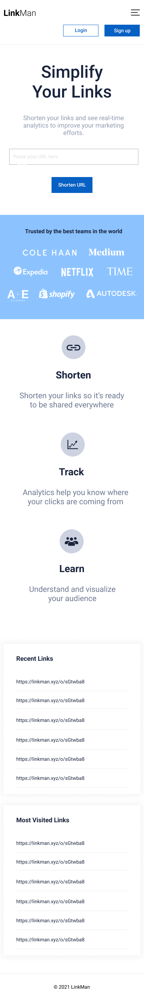
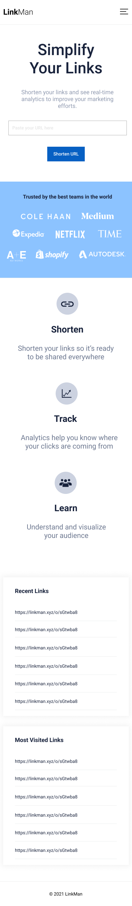
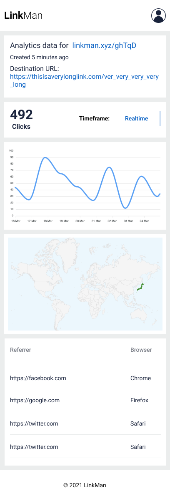

Scenario: Make the application look good, no matter which device is used.
Description: In the beginning most of our use were using desktop browsers, but recently we've been seeing more and more usage of mobile browsers in our analytics, so we'd like to make sure our application looks good in them. We also have a few visual bugs that had been pushed down in priority over the past few sprints that we want to finally address.
The desktop layout inconsistencies and mobile phone portrait orientation are the most important focus for this scenario, but if we are also able to make tablet portrait look good (and not just a blown up mobile portrait) that would be even better.
Some elements are loaded asynchronously and may be slow, so we'd also optionally like to have either loading spinners or skeleton layouts for those portions.
Here are the suggested mobile layouts by our designer. Note that we are not really going for a pixel-perfect implementation; we know that graphic design cannot always depict actual browser interactions, so we'd like you to use your best judgment in case you want to make adjustments.
Major elements to focus on for mobile layout as per provided designs:
The home page layout on mobile is envisioned to be a single column, block-based design with the header having a hamburger menu that expands and contracts on activation:
 | 
The header layout changes when a user is logged in, so we'd like to get that working and designed as well:
|
For the analytics page, we have future plans on adding the realtime graphs and the geoip maps. For now it can be replaced either with placeholders, or they can be omitted entirely.
We'd like to maintain parity with the desktop version regarding navigation behavior, so if a link goes to a different page or opens in a new window or tab, it should keep the same
